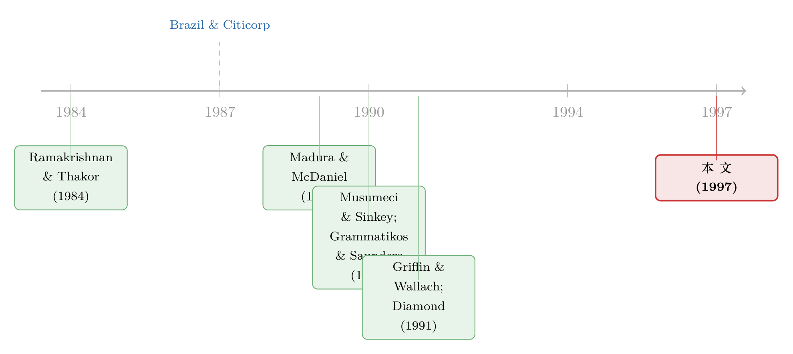

银行为什么不肯承认坏账？——一笔「准备金」如何泄露了整个行业的秘密
本文读的是 Docking, Hirschey & Jones (1997, Journal of Financial Economics)：用 1985–90 年间 578 起美国银行贷款损失准备金（LLR）公告，作者发现这类「纯会计调整」其实是一个负面信号——尤其是 地区性银行 的公告，平均把自家股价砸下 -3.49%，而且会「传染」给货币中心银行（-0.50%, t = -4.16）。坏消息不是从大银行流向小银行，反而是从小银行流向大银行。
1 一个看上去无关紧要的会计动作
先讲一个会计上的常识。
一家银行放出去一笔贷款，只要借款人还在按时付息，这笔贷款就老老实实躺在资产负债表上。可一旦银行嗅到这笔钱可能收不回来，它就要做一件事：在「贷款损失准备金 (loan-loss reserve, LLR)」这个备抵账户里多记一笔，对应地在利润表上记一笔「贷款损失拨备」费用。当期净利润因此减少。
注意，这一步里 没有任何真金白银流出。没有人去法院起诉借款人，没有抵押物被拍卖，贷款也还没有被正式核销 (write-off)。它纯粹是一个簿记调整——就像企业给一台还在用的机器计提减值一样，账面价值变了，机器还在那儿转。
于是一个很自然的问题冒出来了：如果市场是有效的、如果投资者早就把这家银行贷款组合的真实价值「盯市」盯清楚了，那么这种事后追认的会计动作，应该激不起任何水花才对。准备金该提的早就在股价里了，公告日不过是把已知的事情走个程序。
这就是本文要挑战的第一种说法。但故事远没有这么简单。
2 三种针锋相对的预言
作者把文献里能找到的解释，归纳成三种互相打架的假说。它们对同一件事给出了完全相反的预言，这正是这篇论文有意思的地方。
第一种：无反应 (no-reaction)。 如果贷款和股票两个市场都信息有效，理性投资者会「看穿」会计惯例，每天给银行的贷款组合盯市。准备金公告一旦被完全预期到，就不该引起任何显著的股价反应。Musumeci 和 Sinkey (1990a) 就持这种看法——计提准备金只是个没有经济含义的会计调整。
第二种：负反应 (negative-reaction)。 这是 Madura 和 McDaniel (1989) 的逻辑。如果投资者并没有完全看穿银行的问题贷款，那么增提准备金就是一个强烈的坏消息：它不仅说明存量贷款的质量比预想的差，还暗示贷款质量恶化的速度在加快，预告着未来更多的核销、更高的本息违约风险，甚至是贷款官员的失职。更微妙的是监管这一层——1989 年起，美国新的资本充足率规定不再把 LLR 计入银行的「核心」资本 (Keeton, 1989)，于是增提准备金反而会被监管者看作抬高了资本结构的风险。
第三种：正反应 (positive-reaction)。 这听起来反直觉，但逻辑很硬。自 1987 年起，美国银行的损失要到核销那一刻才能抵税，而不是计提准备金时。可既然增提准备金往往是核销的前奏，那么这个公告就等于在说「税收优惠快来了」。更进一步，Musumeci 和 Sinkey (1990a) 指出，背着大笔欠发达国家（less-developed country, LDC）债务的货币中心银行一旦增提准备金，等于向市场宣告：我不再向第三世界国家的政府压力低头、不再给它们展期了。这种谈判立场的「变硬」，反而意味着借款人信用或抵押质量的改善。
三种假说，三个方向。到底哪个对？这就要看数据了。而要看清数据，得先回到一段历史。
3 巴西、花旗，与一场被研究得太窄的危机
这条研究的引线，是 1987 年点燃的。
1987 年 2 月 20 日，巴西政府宣布暂停偿付外债的利息和本金。作为回应，美国最大的银行控股公司花旗（Citicorp）在 1987 年 5 月 19 日宣布，史无前例地把准备金一次性增提 $3 billion。紧接着，一批货币中心银行和地区性银行纷纷跟进，公布自家的准备金调整。
早期的几篇研究，几乎全都盯着这一小段时间、这一小撮事件来看：
- Madura 和 McDaniel (1989) 发现花旗公告当天及随后三天有正的市场反应，还在随后 11 家货币中心银行的公告里看到了正反应。他们的解读是：到 1987 年中，市场早已消化了 LDC 坏账的规模，真正让人惊喜的是核销带来的税收优惠会这么快兑现。
- Musumeci 和 Sinkey (1990b) 用事件研究法考察了花旗公告前后 25 家最大银行控股公司的回报，同样发现花旗及其他货币中心银行有显著的正超额回报。
- Grammatikos 和 Saunders (1990) 却报告了一个更分裂的「传染」效应：花旗公告对三家货币中心银行是正的、显著的传染，对另外四家却是显著负的，整体上没有统计显著的传染。而花旗之后的那些跟进公告，对宣布银行的股价没有显著影响——他们认为这些公告不含新信息。
- Griffin 和 Wallach (1991) 则把准备金和非应计 (nonaccrual) 状态分开：市场对增提准备金正面反应，对非应计贷款增加负面反应。
把这些拼在一起，一个问题就藏不住了：花旗 1987 年 5 月那个正反应，到底是常态，还是特例？
正如 Cornell 和 Shapiro 早就提醒过的，不同的准备金公告完全可能有不同的股价效应——因为坏账的消息是一点一点渗到市场里的，而不是像盈利和股利公告那样集中在几个特定日期爆发。更要命的是，鉴于 LDC 债务问题当年被媒体和分析师翻来覆去地报道，把焦点死死钉在 1987 年中那几周，只能看到这类公告信息效应的一个很窄的切片。
于是真正关键的一步来了：把样本拉大。
（关于「传染」这件事本身怎么度量、怎么和单纯的相关性区分开，可参见《别再盯着相关系数了——用「一起暴跌」数出传染》。）
4 识别策略：把 578 起公告摊开来看
本文从 1985–90 年的《华尔街日报索引》（Wall Street Journal Index）里，按「loan loss reserves / loan-loss provisions / loans / money and banking」等标题，手工筛出所有银行 LLR 公告，再逐篇读原文，记下银行名、增提金额、以及同期披露的季度盈利和股利信息。
最终样本：578 起公告，其中 188 起来自 9 家货币中心银行，390 起来自 102 家地区性银行。这覆盖了同期可识别公告的 92.2%——相比之下，早期研究往往只看花旗一家、几周时间。这个时间窗口的妙处在于，它把巴西违约前、中、后都包了进来。
方法上，作者用 James (1987) 的普通最小二乘市场模型 (OLS market-model) 事件研究法。核心是「累计平均预测误差 (cumulative average prediction error, CAPE)」。单个公司在某一天的预测误差，就是实际回报减去市场模型拟合出来的「正常」回报：
$$ PE_{it} = R_{it} - (\hat{\alpha}_i + \hat{\beta}_i R_{mt}) $$
把它在事件窗口内累加、再在样本里平均，就得到 CAPE。本文报告的是两日 (-1, 0) 窗口。由于货币中心银行和地区性银行的总体方差既未知又很可能不同，作者用了允许方差不等的均值差检验，median 则用 Wilcoxon 符号秩检验与 Mann–Whitney 检验做稳健性。
但样本拉大之后，立刻撞上一个棘手的污染问题。
5 那三分之二「不干净」的公告
作者数了一下：整个样本里，只有 153 起（26.4%）是「纯粹」的 LLR 公告——银行只宣布增提准备金，别无他事。剩下 425 起（73.6%）都同时夹带了别的重要经营信息。
老办法是把这四分之三「污染」样本直接扔掉。但 Wahlen (1994)、Liu 和 Ryan (1995) 提出了一个更聪明的思路：与其丢弃，不如在同期披露的语境里逐个分析。顺着 Hirschey, Slovin 和 Zaima (1990) 的多信号识别逻辑，作者把全部公告按「同期还披露了什么」分成五类：
- Type 1（纯 LLR，N =
153）：只宣布增提准备金。 - Type 2（伴随季度盈利上升，N =
211）：主业是报喜，准备金的减少常被用来解释盈利改善。 - Type 3（伴随季度盈利下降，N =
88）：盈利仍为正但同比下滑，管理层常把准备金当作业绩失望的借口。 - Type 4（伴随季度亏损，N =
97）：管理层往往把准备金说成亏损的「罪魁祸首」。 - Type 5（伴随股利削减，N =
29）：减、漏、或暂停派息，多数同时报亏。
这套分类不是为了好看。它恰恰是把「准备金这个信号本身值多少钱」和「它被什么样的伴随消息裹挟」分开的一把手术刀。
6 主要结果：坏消息，而且地区性银行最痛
先看最干净的 Type 1——纯准备金公告，没有任何其他消息干扰。
结果一边倒地落在负反应假说这一边。Type 1 公告下，地区性银行两日 CAPE 为 -3.49%（t ≈ -10.45），统计上极度显著；而货币中心银行只有 -0.71%，并不显著。换句话说：当一家银行除了「我要多提准备金」之外什么都没说时，市场把它当作实打实的坏消息——但只有对那些平时不太被盯着看的地区性银行才是坏消息。
为什么是这种不对称？作者的解释很直白：货币中心银行被证券分析师密集覆盖、被媒体反复报道，市场对它们的放贷状况已经知道得够多，准备金公告里没剩下多少「意外」。可地区性银行的放贷实践和放贷经验，外界知之甚少——它们的准备金公告，才真正携带了关于本地信贷市场借款人状况的、令人意外的负面信息。
再看其余几类，信号的「明暗」一路加深：
- Type 2（盈利上升）：CAPE 在
0.5%上下、甚至微正，不显著为负——准备金若是在一片业绩向好的背景里宣布，几乎是良性的，市场不当回事。 - Type 3（盈利下降）：合并 CAPE
-0.68%（t = -2.62），开始转负。 - Type 4（亏损）：地区性银行
-4.49%（t = -7.78），而货币中心银行只有-0.20%（t = -0.46，不显著）；两组均值差异可以拒绝相等（t = 2.53）。 - Type 5（削减股利）：这是最黑的消息。货币中心银行
-11.87%（t = -7.99），地区性银行-6.23%（t = -8.58），合并-6.76%（t = -9.99）。
Type 5 这么惨并不奇怪。它和股利文献完全吻合——Healy 和 Palepu (1988) 发现宣布漏发股利的公司两日回报平均 -9.5%；DeAngelo, DeAngelo 和 Skinner (1992) 又指出，有盈利和股利记录的成熟公司削减股利，几乎都伴随当期亏损。所以 Type 5 那一大块负回报，很大程度上其实是股利削减这个信号贡献的，而不是准备金本身。
把整张表合起来看（全部 578 起公告），地区性银行平均 -2.26%（t = -13.46），货币中心银行只有 -0.23%（t = -1.37，不显著），两者均值差 2.03%（t = 3.87）。
这里有一个对实证方法的重要警示：不控制同期信息披露，就会得出误导性的结论。早期研究在花旗事件窗口里看到的「正反应」，很可能正是因为那些公告恰好裹在税收利好或业绩改善的背景里。把信号拆开，准备金公告本身的底色是负的。
7 真正的反转：传染，是从小银行流向大银行的
到这里，文章其实已经能交差了——准备金是负信号，地区性银行最受伤。但本文最漂亮的一笔，在「传染 (contagion)」这一节。
所谓传染效应，是指一家公司的价值变化，能被归因于另一家公司更直接相关的经济事件。在银行业，这个想法有坚实的理论基础：如果银行的贷款组合里沉淀着关于客户企业的私有信息（Ramakrishnan and Thakor, 1984; Diamond, 1991），那么一家银行的坏消息，就有可能向外溢出，重新定价别的银行。
为了把传染从「会计噪声」里干净地剥出来，作者只用 Type 1（纯公告）来测——因为只有它不夹带别的信息。结果分两层：
第一层，整体看： 货币中心和地区性银行的纯公告，平均给非宣布银行带来 -0.11%（t = -3.41）的传染。有，但很弱。
第二层，拆开看，反转出现了。 货币中心银行的公告，对其他货币中心银行的传染是 0.06%（t = 0.24），对地区性银行是 -0.06%（t = -0.99）——两个都不显著。也就是说，正如 Grammatikos 和 Saunders (1990) 早就暗示的，大银行的准备金公告对同行的影响是含糊的。这也说明，那些围绕花旗 1987 年公告做出的「正传染」结论，只是一个很窄的切片。
可一旦轮到地区性银行发公告，传染就清晰起来了：它把货币中心银行的股价压下 -0.50%（t = -4.16），把其他地区性银行压下 -0.10%（t = -2.40）。
这是一个相当反直觉的发现。按常理，信息应该从信息更丰富、媒体更关注、LDC 敞口更大的大银行，流向小银行才对。可数据说的恰恰相反：一家不起眼的地区性银行说自己要多提准备金，不光自己跌，连华尔街的巨头们都跟着跌。
作者给的机制是：货币中心银行常常参与各地区市场，因而共享了地区贷款组合的风险敞口；反过来，影响货币中心银行贷款组合的因素，也在影响地区性银行。地区性银行的准备金公告，等于把一个关于「区域信贷状况正在恶化」的、市场原本没看清的信号公之于众——而这个信号，对资产质量和那些大块头是绑定的。这条统计上显著的传染链，第一次把货币中心银行和地区性银行的资产质量特征联系到了一起。
（顺带一提，关于银行资产到底是「看不懂」还是「没意思」、市场能否给银行的贷款组合定价，可参见《银行的资产不是「看不懂」，只是「没意思」》；而管理层明知准备金公告会引来负面反应，为什么还主动披露，则是《老板明知道银行会盯着他，为什么还主动把脖子伸过去？》的主题。）
8 文献脉络
把这条线索捋一遍，会看到一个典型的「从特例到一般」的研究演进。
最上游是银行的信息中介理论——Ramakrishnan 和 Thakor (1984)、Diamond (1991) 论证了银行贷款组合里沉淀着关于借款人的私有信息，这为「银行公告会携带信息、甚至传染同行」提供了理论地基。

中游是 1987 年巴西违约 + 花旗 $3 billion 这个里程碑事件，催生了一批就事论事的实证：Madura 和 McDaniel (1989)、Musumeci 和 Sinkey (1990a, 1990b) 报告正反应，Grammatikos 和 Saunders (1990) 报告混合的传染，Griffin 和 Wallach (1991) 把准备金与非应计状态分开。它们的共同短板，是样本太窄——几乎只盯着花旗、只盯着 1987 年中。
本文 (1997) 站在的位置，就是把这条线从「一个事件、几周」推广到「578 起公告、六年」，并用同期信息分类把信号拆干净。它的结论既校正了早期的「正反应」印象（那多半是污染所致），又添上了一个全新的事实：传染是地区性银行 → 货币中心银行这个方向的。
9 评论与延伸（Q&A + 研究方向）
(a) 几个可能的疑问
Q：增提准备金不就是个会计动作吗？凭什么算「新信息」？
关键在于市场是否已经把坏账盯市定价。本文证据显示，对信息相对稀缺的地区性银行，准备金公告平均带来
-3.49%的显著负反应——说明它确实携带了市场此前没看清的负面信息。而对被分析师密集覆盖的货币中心银行（-0.71%，不显著），信号基本已经price-in，更接近「无反应」假说。同一个会计动作，信息含量取决于谁来披露。
Q：那早期研究看到的「正反应」是错的吗？
不能说错，但很可能是样本选择和信息污染的产物。早期研究集中在花旗 1987 年那几周，而那批公告常裹挟着税收利好和业绩改善。本文把
425起「污染」公告按 Type 2–5 拆开后发现：只有伴随盈利上升（Type 2）的公告才接近零或微正，纯公告（Type 1）和伴随坏消息的公告一律为负。不控制同期披露，结论就会被带偏。
Q：传染从地区性银行流向货币中心银行，会不会只是因为它们一起暴露在同一个宏观冲击下，而非真正的「信息传递」？
这是最值得担心的识别问题。作者的辩护是用 Type 1 纯公告来测，剔除了同期盈利/股利信息的干扰；机制上诉诸于「货币中心银行参与各地区市场、共享区域信贷风险」。但严格说，这仍是一个事件窗口内的相关性，无法完全排除「共同基本面冲击恰好在那两天显现」。要彻底干净，需要外生地切断两类银行的基本面联系，这篇 1997 年的论文做不到。
Q：Type 5（股利削减）跌了 -6.76%，这真能归功于准备金吗？
基本不能，作者自己也很坦诚。Healy 和 Palepu (1988) 报告漏发股利平均
-9.5%，DeAngelo 等 (1992) 指出股利削减几乎总伴随亏损。所以 Type 5 的大跌主要是股利信号贡献的，准备金只是搭了便车。这恰恰说明把公告按伴随信息分类的必要性——否则你会把股利的锅扣到准备金头上。
Q：为什么货币中心银行的公告几乎没有传染，地区性银行却有？
因为信息含量是相对市场已知度而言的。货币中心银行的 LDC 敞口被媒体反复报道，公告里没剩多少意外，自然也传染不动同行（
0.06%和-0.06%都不显著）。地区性银行的本地放贷状况外界知之甚少，它的公告才真正更新了市场对「区域信贷在恶化」的认知，而这个认知对大小银行都成立。
Q：这个 (-1, 0) 两日窗口够吗？会不会有信息提前泄露或延后反应？
两日窗口是为了捕捉公告日及前一天可能的泄露，比较保守。但准备金这类消息恰恰是 Cornell 和 Shapiro 说的「增量渗透」型——坏账一点点曝光，未必集中在公告日。若有缓慢的信息扩散，短窗口会低估总效应。这是事件研究方法本身的局限，不是本文独有。
(b) 几个可能的研究问题与提案
1. 把「传染方向」搬到公司债与 CDS 市场重做一遍。 【经济故事】本文的传染靠的是股价，但贷款损失最直接的索取权是债权人。如果地区性银行的准备金公告真携带「区域信贷恶化」的信息，那么它对其他银行债券利差/CDS 利差的传染，理论上应该比股票更强、更干净（股票还混着期权价值）。【可行性】中。需要 TRACE 的银行债成交数据 + Markit CDS，事件仍取 LLR 公告日。难点是银行债流动性差、CDS 样本以大银行为主，地区性银行覆盖不足——可能反而只能验证「大银行被传染」这半边。
2. 外资持有人在传染链中的角色。 【经济故事】如果一家银行的股东里外资占比高，传染会被放大还是被熨平？外资可能因信息劣势而过度反应，也可能因为分散持有而更淡定。把「准备金公告 → 同行股价」的传染强度，按持有人结构做横截面切分，能检验传染到底是「信息」还是「情绪」。【可行性】中。需要 13F / 各国持股数据匹配到银行层面，识别上可用持有人结构的外生变动（如指数纳入）做工具。
3. 监管资本规则变化作为外生冲击。 【经济故事】本文提到 1989 年起 LLR 不再计入核心资本 (Keeton, 1989)。这是一个清晰的断点：规则生效前后，同样规模的准备金公告，市场反应是否系统性变负（因为现在它还抬高了监管风险）？【可行性】高。断点回归 (regression discontinuity) 或前后双重差分 (difference-in-differences, DiD) 都可做，数据就是本文已有的公告样本按时间切。这是把「监管渠道」从「信息渠道」里分离出来的好机会。
4. 现代版：CECL 准则下的准备金公告。 【经济故事】2020 年起美国实施预期信用损失 (CECL) 模型，准备金从「已发生损失」转向「前瞻性预期」。理论上这让准备金更早、更含信息。本文的「负信号 + 地区性银行更痛」在 CECL 下是被强化还是被稀释？【可行性】高。数据现成（FR Y-9C + CRSP），事件研究方法可直接平移，还能和 1997 年的结果做跨制度对比。
5. 传染的「网络」结构。 【经济故事】本文只把银行分成货币中心 vs 地区性两类。但传染很可能沿着具体的关联走——同业拆借敞口、共同的大额借款人、地理重叠。用银行间网络数据，能否预测哪家银行的公告会传染到哪家？【可行性】中到低。需要银团贷款 (DealScan)、同业敞口等数据构建网络，识别上要处理网络内生性，工作量大但方向新。
10 我的判断
这篇论文的贡献，不在于方法有多花哨——它就是一个干净、规整的市场模型事件研究——而在于它用一个大样本和一套信息分类，把一个被花旗事件带偏的文献校正了回来。两个事实站得住：其一，准备金公告本质是负信号，且信号强度与披露者的「市场已知度」成反比，这与信息中介理论一致；其二，传染方向是反直觉的「小→大」，把货币中心银行和地区性银行的资产质量第一次绑在了一起。
最大的隐忧仍是识别。所有结论都建立在事件窗口内的异常回报上，而准备金公告这种「增量渗透」型消息，天然不适合短窗口；更要命的是，「地区性银行传染货币中心银行」无法排除「两类银行同时暴露在某个区域宏观冲击下、而冲击恰在那两天显现」。作者用 Type 1 纯公告 + 共享敞口的机制来辩护，是合理的，但不是决定性的。
如果让我接着往下做，我最想看到两件事：一是把这套传染检验搬到债券与 CDS 市场——债权人才是损失的第一索取权人，传染若真源于信息，应该在信用市场里更锋利；二是利用 1989 年资本规则变更或 2020 年 CECL 准则这样的制度断点，把「信息渠道」和「监管渠道」彻底分开。这篇 1997 年的论文打开了门，但门后那条「资产质量传染链」到底由什么驱动，还值得再走很远。
参考文献
- Cornell, B., & Shapiro, A. C. (1986). The reaction of bank stock prices to the international debt crisis. Journal of Banking & Finance 10(1), 55–73.
- DeAngelo, H., DeAngelo, L., & Skinner, D. J. (1992). Dividends and losses. Journal of Finance 47(5), 1837–1863.
- Diamond, D. W. (1991). Monitoring and reputation: The choice between bank loans and directly placed debt. Journal of Political Economy 99(4), 689–721.
- Docking, D. S., Hirschey, M., & Jones, E. (1997). Information and contagion effects of bank loan-loss reserve announcements. Journal of Financial Economics 43(2), 219–239.
- Grammatikos, T., & Saunders, A. (1990). Additions to bank loan-loss reserves: Good news or bad news? Journal of Monetary Economics 25(2), 289–304.
- Griffin, P. A., & Wallach, S. J. R. (1991). Latin American lending by major U.S. banks: The effects of disclosures about nonaccrual loans and loan loss provisions. The Accounting Review 66(4), 830–846.
- Healy, P. M., & Palepu, K. G. (1988). Earnings information conveyed by dividend initiations and omissions. Journal of Financial Economics 21(2), 149–175.
- Hirschey, M., Slovin, M. B., & Zaima, J. K. (1990). Bank debt, insider trading, and the return to corporate selloffs. Journal of Banking & Finance 14(1), 85–98.
- James, C. (1987). Some evidence on the uniqueness of bank loans. Journal of Financial Economics 19(2), 217–235.
- Keeton, W. R. (1989). The new risk-based capital plan for commercial banks. Federal Reserve Bank of Kansas City Economic Review 74(10), 40–60.
- Madura, J., & McDaniel, W. R. (1989). Market reaction to increased loan loss reserves at money-center banks. Journal of Financial Services Research 3(4), 359–369.
- Musumeci, J. J., & Sinkey, J. F. (1990a). The international debt crisis and bank loan-loss-reserve decisions. Journal of Money, Credit and Banking 22(3), 370–387.
- Musumeci, J. J., & Sinkey, J. F. (1990b). The international debt crisis, investor contagion, and bank security returns in 1987. Journal of Money, Credit and Banking 22(2), 209–220.
- Ramakrishnan, R. T. S., & Thakor, A. V. (1984). Information reliability and a theory of financial intermediation. Review of Economic Studies 51(3), 415–432.